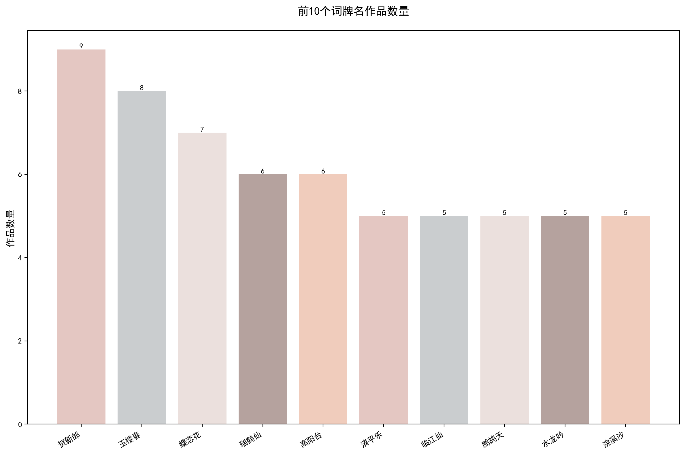
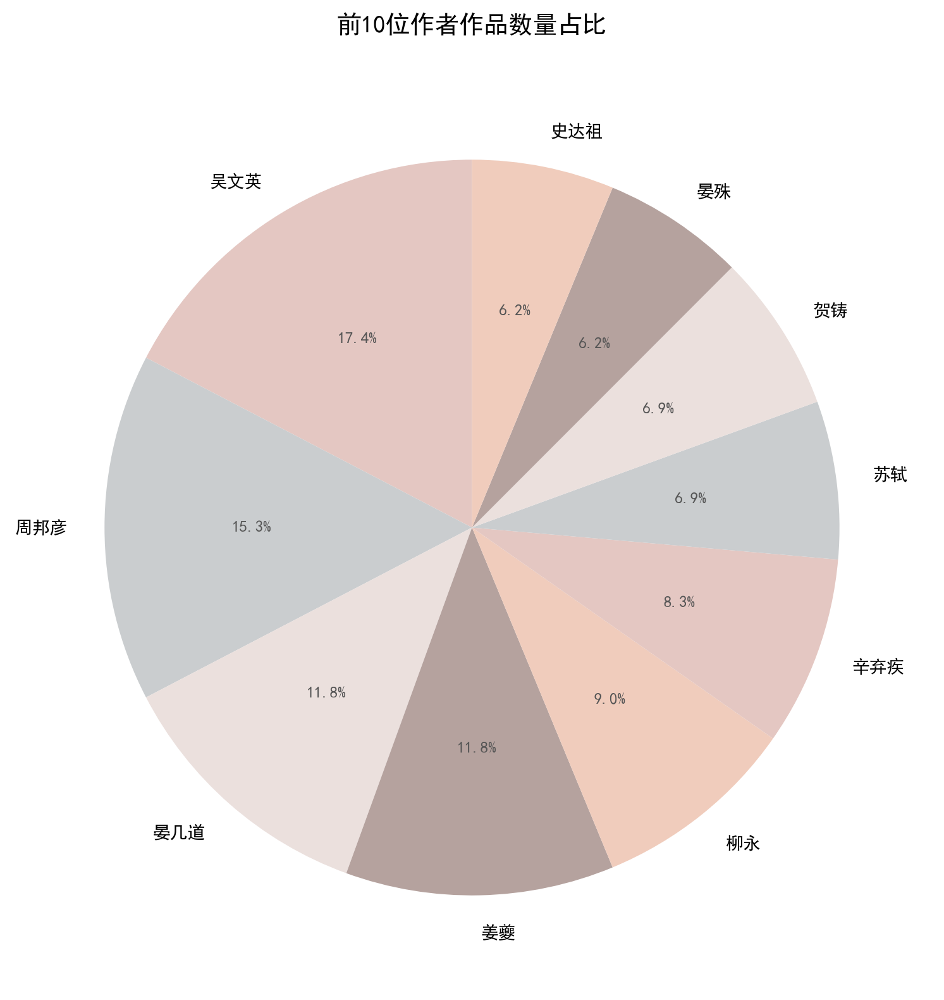
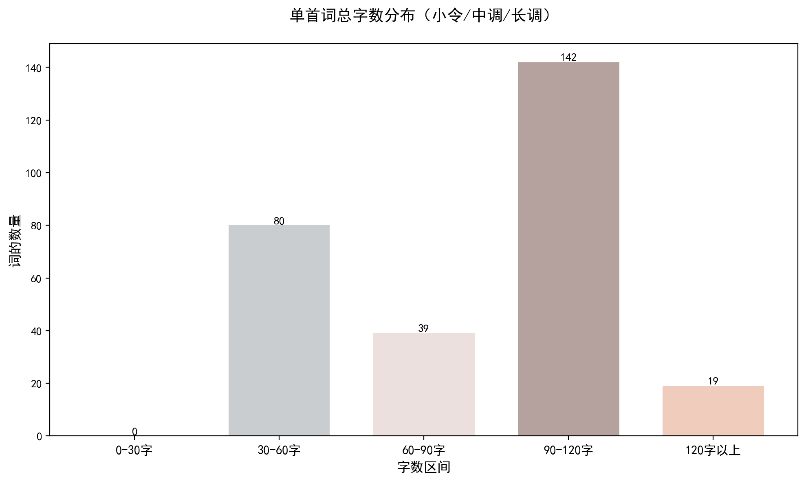
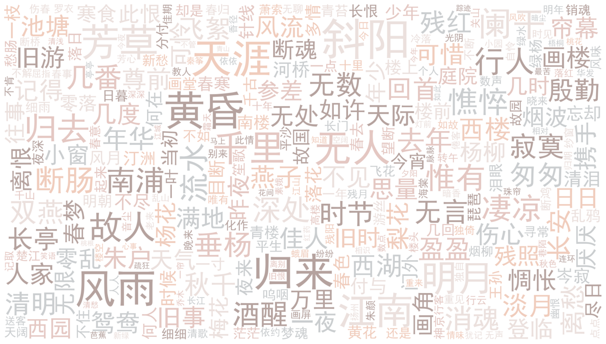
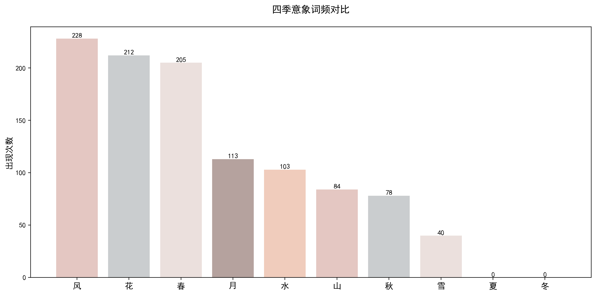
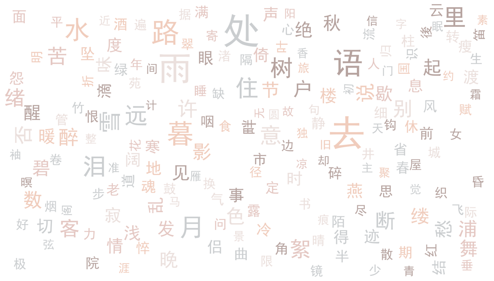

前10个词牌名作品数量
从《宋词三百首》的词牌分布来看，"贺新郎"以9首位居榜首，"玉楼春""蝶恋花"紧随其后。值得注意的是，排名前十的词牌作品数量差距并不悬殊，说明该选本在词牌选择上较为均衡，并未过度集中于某几个词牌。这些词牌多为中长调，适合抒发复杂情感，体现了编者对宋词艺术性的考量——偏好结构完整、意境深远的作品。
基于《宋词三百首》文本数据的宋词艺术特征与意象偏好可视化分析
在数字人文背景下，传统文学研究正逐步向量化分析转型。本项目以经典选本《宋词三百首》为数据源，运用Python进行数据分析与可视化，旨在从作者分布、词牌体制、字数规律及高频意象四个维度，量化分析宋词的艺术特征，有助于直观揭示宋词的体裁偏好与审美倾向，为解读研究古典文学展现了新的视角。
分析表明，《宋词三百首》在选篇上显著偏向婉约派与格律派词人；在体制上偏好结构适中的中调与长调；在内容上，"风""花""春""月"等自然意象与离愁别绪的情感表达占据了绝对主导地位，印证了宋词"以婉约为正"的文学传统。

从《宋词三百首》的词牌分布来看，"贺新郎"以9首位居榜首，"玉楼春""蝶恋花"紧随其后。值得注意的是，排名前十的词牌作品数量差距并不悬殊，说明该选本在词牌选择上较为均衡，并未过度集中于某几个词牌。这些词牌多为中长调，适合抒发复杂情感，体现了编者对宋词艺术性的考量——偏好结构完整、意境深远的作品。

吴文英以17.4%的占比高居榜首，周邦彦、晏几道、姜夔分别占15.3%、11.8%、11.8%，四人合计超过56%。这一分布反映了《宋词三百首》的选词倾向——较为偏向婉约派与格律派词人。苏轼、辛弃疾等豪放派代表仅占6.9%，说明编者在"三百首"的有限篇幅中，更看重词的音律之美与含蓄之致，而非豪放旷达的风格。

从单首词字数分布来看，《宋词三百首》的作品多集中在50至100字的中调区间。这一分布直观反映了宋词在体制上的审美偏好：既突破了早期小令的短促，能容纳更丰富的抒情层次；又避免了长调可能带来的拖沓。这种"长短适中"的特征，恰好契合了宋代文人含蓄蕴藉的表达需求，是宋词体制走向成熟的重要标志。

词云中"不知""何处""东风""江南"等词最为醒目，有效勾勒出了宋词的核心意境。"不知"与"何处"折射出词人内心的怅惘与对时空的追问；"东风""江南"则构建了典型的婉约派自然与地理背景。这些高频词生动展现了宋词重意境、尚含蓄的特质，将离愁别绪与身世之叹巧妙融于景物与想象之中，富有古典美感。

"风""花""春"以超过200次的频次成为宋词最高频意象，"月""水""山"紧随其后，而"夏""冬"几乎缺席。这一分布揭示了宋词鲜明的审美倾向：词人偏爱春秋两季的柔美意象，对严寒酷暑则较少着墨。"风花雪月"中唯"雪"频次较低（40次），说明选本中的词作虽重意境，但更倾向于温暖、流动的自然人意象，而非冷寂肃杀之景。

词云中"处""雨""语""去""暮""泪""月"等字最为醒目，勾勒出宋词的核心情感基调：离愁别绪与时光流逝。"楼""户""树"等空间意象频繁出现，暗示词人常借庭院楼阁寄托幽思。整体来看，高频词多带有淡淡的哀愁与朦胧的美感，印证了宋词"以婉约为正"的文学传统，也解释了为何春、秋的意象远多于夏、冬——词人书写的是内心四季，而非自然四季。
作品数前10的作者作品总占比超过80%，其中吴文英与周邦彦位居前列。反映了编者在选篇时高度青睐注重音律与含蓄之美的婉约派大家，苏轼、辛弃疾等豪放派则占比相对较小。
作品数前10的词牌名作品数量差距不大，说明选篇未过度集中。字数分布显示，50-120字的中调与长调占比最高，这种体制在表情达意上最具表现力，契合宋代文人的表达需求。
四季意象中，"风、花、春"频次极高，而"夏、冬"几乎缺席。结合正文词云中突出的"处、雨、暮、泪"等字，可以看出选篇宋词很少描写严酷自然，而是借柔美意象寄托离愁别绪与时光流逝之叹。